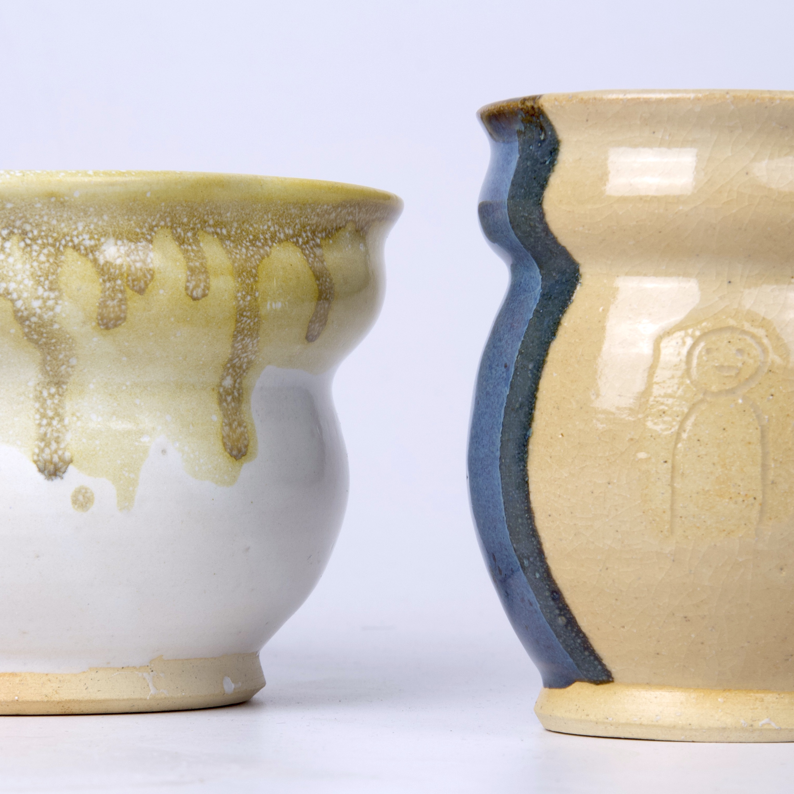
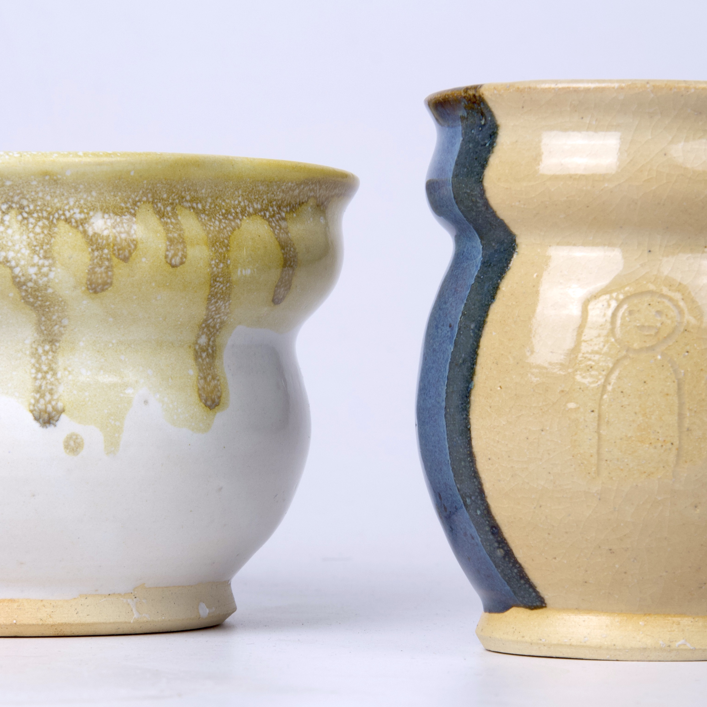
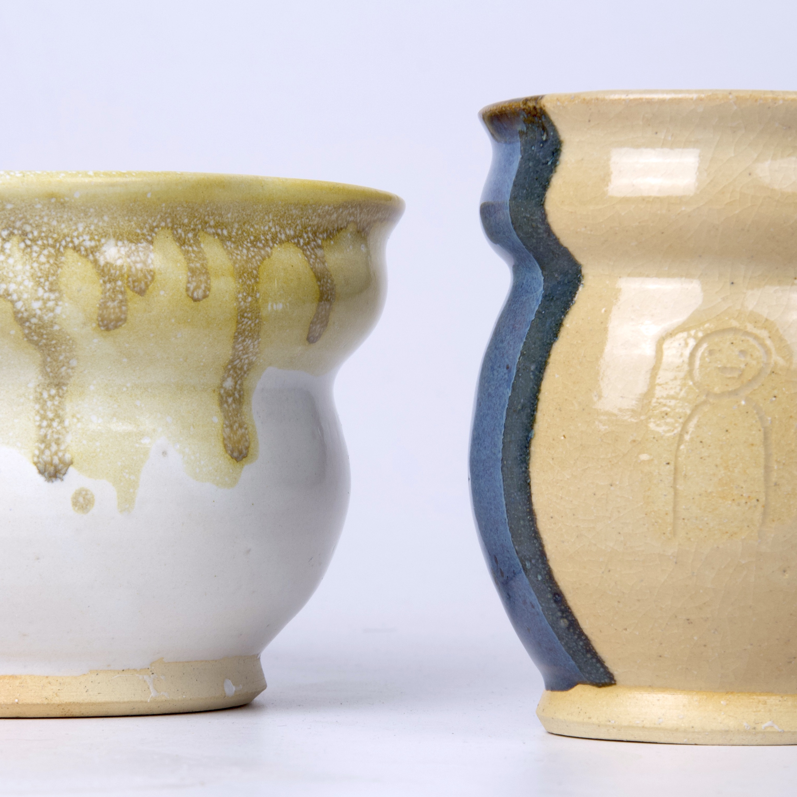
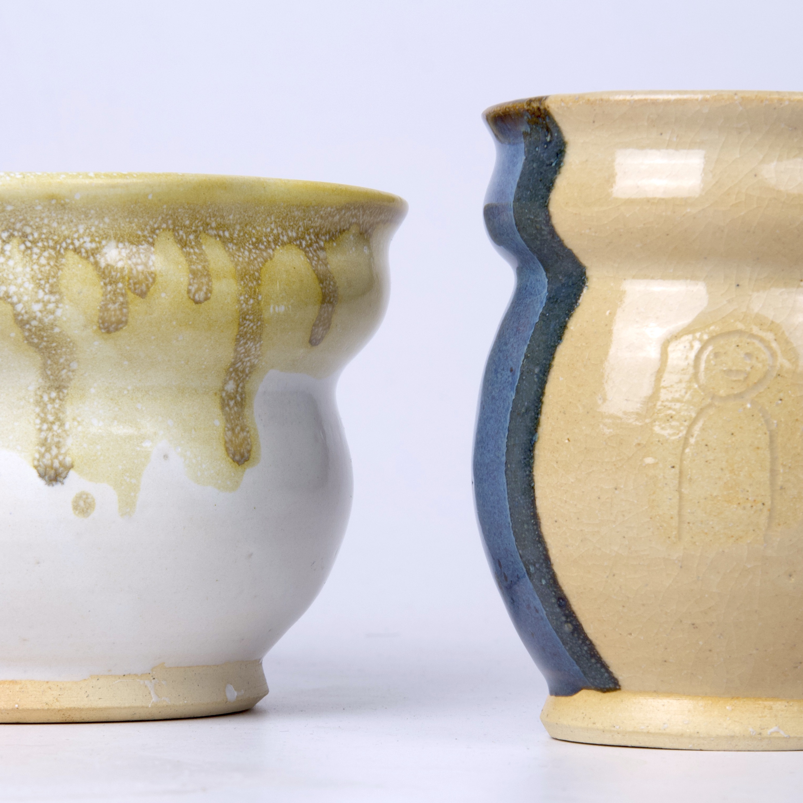

I'm Nathan Pauls, a fourth-year art and communication double major. I attend Goshen College, a small liberal arts school in Goshen, Indiana and I'm originally from Lancaster, Pennsylvania. I've always loved creating art and media-based projects. My current passions are ceramics, drawing, and writing . This website doubles as a portfolio and a place to document all the work I'm doing. Have a look around and I hope you enjoy your stay!